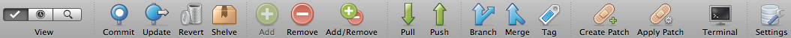
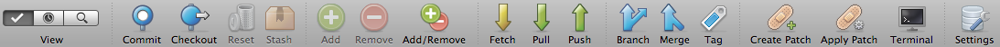

Repository Window: The Toolbar
The repository window has a slightly different toolbar depending on whether you're looking at a Mercurial or Git repository:
Mercurial Toolbar

Git Toolbar

The View Button
This button allows you to switch between the 3 main views of the repository: File Status, Log, and Search.
Commit
Opens the Commit dialog so you can commit your changes. In Git, if you're using staging, the default is to open the dialog with the commit of staged changes selected. In Mercurial, or Git with the staging view disabled, the dialog opens with either all pending files selected (if 0 or 1 file is selected in the File Status view, or you're on another view), or with specific files selected (if 2+ files are selected in the file status view).
You can also commit specific files by using the context menu version of Commit from the File Status View, or by customising your toolbar to add the 'Commit Selected' button.
Update (Mercurial) / Checkout (Git)
Allows you to switch your local working copy to a different point in history. In Git, this will also move your HEAD (equivalent to git reset followed by git checkout).
Revert (Mercurial) / Reset (Git)
Use this to undo changes in your working copy.
Shelve (Mercurial) / Stash (Git)
Moves any uncommitted changes you have in your working copy to a storage area, and returns your working copy to a clean state. A entry representing your stashed/shelved changes will appear on the sidebar once complete and you can bring these changes back into your working copy later from the sidebar context menu.
Add
Adds any selected untracked files to source control - the next commit will start to track these files.
Remove
Stops tracking selected files and removes them from the working copy. The next commit will remove these files from being tracked in source control.
Add/Remove
A shortcut to stop tracking all files which are missing from the working folder, and to add any untracked files to source control. In Git, this also stages any modified files.
Fetch (Git only)
Download new commits from your remotes, but don't bring them in to your own branch yet.
Pull
Download new commits from your remotes and bring them in to your current branch, either by merging or rebasing. This icon will show a number over the top of it if there are commits available on the remote for you to pull (updated periodically based on your Preferences).
Push
Upload new commits to a remote. This icon will have a number superimposed on it if you have commits which you haven't pushed yet.
Branch
Create a new branch (also includes a tab for removing branches in Git)
Merge
Merge changes into your current branch.
Tag
Create and manage tags.
Create Patch
Create a patch file either from your current uncommitted changes, or from one or more commits that you've already made.
Apply Patch
Apply a patch file either to your working copy or directly to the commit log.
Terminal
Open a Terminal at the selected location (this button may not be displayed in the default toolbar, right-click the toolbar to customise it if you wish to add it).
Settings
Access per-repository settings such as remotes.
See also
The Sidebar and Footer
The File Status View
The Log View
The Search View
Drafting a commit message
Submodules and Subrepositories